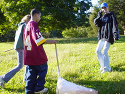
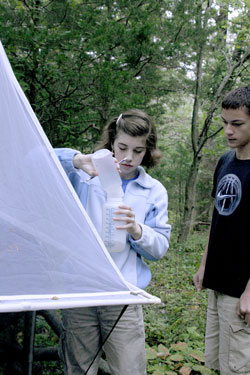
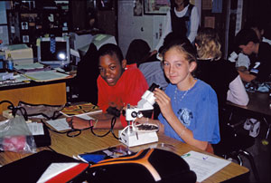

LET’S PRACTICE DESIGNING AN EXPERIMENT
Before moving on, download the Experimental Design Diagram. This form is designed to help you organize your thoughts and work through the details of organizing an experiment. You will need to work with your teacher and classmates to practice using the form by choosing a question to design an experiment for. If you want to use one of the team's questions suggested on the previous page, they are reprinted here:
• “What is the effect of species of tree on the number of myxomycete species cultured from the bark?”
• “What is the effect of tree species on the number and diversity of insect species captured in a canopy trap?”
• “What is the effect of bark pH on the diversity of lichens present?”
Before starting, make sure that you understand the following terms:
Independent
variable
Dependent
variable
Sample
size
Constants
(Controlled variables)
LOCAL
ADVENTURE AND LAB PHASES

Teachers - Be sure to visit the "Teacher Page" for lots of tips and resources.
You are now ready for ADVENTURE! Enjoy whatever type of field research that you and your teacher have planned. The WMS students often collect insect specimens during our field trips to the local research sites and then develop their classification skills as they sort and identify any specimens. We also have collected bark samples and prepared moist chamber cultures to study myxomycetes and lichens. This can lead to all kinds of questions about the relationships between insects or myxomycetes and the other factors of the habitat. Sometimes our field research takes us to local streams and ponds to conduct water quality data. A student might investigate the relationship between one of the water tests and a population of invertebrates present.
I hope that you will be able to combine the best of outdoor experiences with interesting lab analysis of your specimens and data. Whatever you do, keep thinking about questions that you could explore or answer with the data you are developing.
Your teacher will help you and your classmates to combine and organize all of the information collected from the field research and the labs. Then it will be time for you to develop a more specific research question of your own.